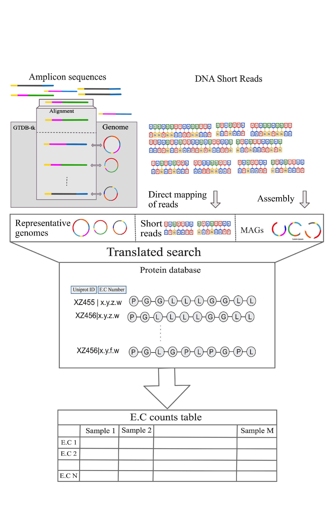

Pipeline for Understanding ADToolbox

The pipeline for analyzing DNA sequences can be broken down into computational steps that makes the process easy to follow. Two different sequence data sets, 16s and shotgun can both be implemented into ADToolbox for sequence analysis. An example of each will be demonstrated below.
-
the first step downloads sequence data from either a SRA sequence database or sequences collected from experimental data
-
the sequence data will then be processed: QiimeII for 16s data and Shotgun for shotgun data
-
After finding the top representative data within the data sets, the sequences will be aligned to the genome database in ADToolbox.
-
Once aligned the EC count and relative abundance of each enzyme in the sequences will then be analyzed using scaling techniques and quality checks to hopefully find clustering in the data.
The example data sets analyzed below for 16s and shotgun data are linked from the SRA database.
-
16s data: https://www.ncbi.nlm.nih.gov/bioproject/PRJNA803452/
-
shotgun data: https://www.ncbi.nlm.nih.gov/bioproject/PRJNA657455/
Pipeline for 16s Data
Using either 16s data from the sra database or 16s data collected from individual experimental samples, the first step is downloading the sequence data. Having the data in a csv format presents the data in a way that is easily interpreted and readable.
For the example 16s data, the datatable named elk_bison_cattle_datatable.csv is downloaded and the resulting sequences are dumped into a folder (sra_16s_elk_bison_cattle) where the data will be stored. Because the data set included different assay types and only AMPLICON is wanted, line 7 in the code was added to only use the AMPLICON samples in the analysis.
# Download Sequences from SRA Database
import os
import pandas as pd
from adtoolbox import core,configs
#metadata.loc[metadata["Biological_Replicate"].str.contains("Cattle")] # (optional: if only cattle wanted to be studied etc.)
metadata=pd.read_table("metadata_16s/elk_bison_cattle_datatable.csv",delimiter=",") # reads the csv data table from the metadata_16s folder
metadata=metadata.loc[metadata["Assay Type"]=="AMPLICON"] # modifies the data so only AMPLICON assay type is downloaded
accessions=metadata["Run"].to_list() # creates the accession list
metag_conf=configs.Metagenomics(sra=os.path.join(core.Main_Dir,"sra_16s_elk_bison_cattle")) # creates a file where the sequences will be dumped
metag_class=core.Metagenomics(metag_conf)
os.system(f"export PATH=$PATH:/scratch/alpine/$USER/sratoolkit.3.0.5-ubuntu64/bin/") # path
for acc in accessions:
metag_class.seqs_from_sra(accession=acc)
To align the 16s data to ADToolbox's protein database, qiime is used to analysis the sequences and singularity is required.
# Align sequences with ADToolbox protein database using Qiime
import os
import pathlib
from adtoolbox import core,configs,utils
import pandas as pd
# system path config
os.system("export SINGULARITY_CACHEDIR=/scratch/alpine/$USER/.singularity/cache") # cache directory for singularity
os.system("export SINGULARITY_TMPDIR=/scratch/alpine/$USER/.singularity/tmp") # temporary directory for singularity
os.system("export APPTAINER_TMPDIR=/scratch/alpine/$USER/.singularity/tmp")
os.system("export APPTAINER_CACHEDIR=/scratch/alpine/$USER/.singularity/cache")
db=core.Database(config=configs.Database())
#db.download_qiime_classifier_db() # downloads the qiime classifier if not already installed (only needs to download once)
metadata=pd.read_table("metadata_16s/elk_bison_cattle_datatable.csv",delimiter=",")
metadata=metadata.loc[metadata["Assay Type"]=="AMPLICON"] # specifies that only amplicon will be used
accessions=metadata["Run"].to_list()
metag_class=core.Metagenomics(configs.Metagenomics())
for acc in accessions:
seqs_path=pathlib.Path(core.Main_Dir,"sra_16s_elk_bison_cattle",acc,"seqs",acc) #pathlib object pointing to the base directory for each sample
utils.wrap_for_slurm(metag_class.run_qiime2_from_sra(
query_seq=os.path.join(core.Main_Dir,"sra_16s_elk_bison_cattle",acc,"seqs",acc),
container="singularity",
run=False,
save=True
)[0],
run=True,
save=True,
config=configs.Utils(
slurm_executer="amilan",
slurm_memory="120G",
slurm_job_name=f"{acc}_16s_ADToolbox",
slurm_wall_time="5:00:00",
slurm_save_dir=os.path.join(core.Main_Dir,acc+".sbatch"),
))
Once the sequences are aligned to the protein database, the top representative sequences will be aligned to the 16s data using a gtdb dictionary where the key is the 16s sequence and the value is the representative value identifier.
# Get top representative sequences and align to gtdb using VSEARCH
import os
import pathlib
from adtoolbox import core,configs,utils
base=pathlib.Path(os.path.join(core.Main_Dir,"sra_16s_elk_bison_cattle")) # base directory
for i in base.iterdir():
mg_config=configs.Metagenomics(top_repseq_dir=str(i/"seqs"/i.name/"dna-sequences.fasta"),
align_to_gtdb_outputs_dir=str(i/"seqs"/i.name),
vsearch_similarity=0.9)
mg=core.Metagenomics(mg_config)
command=mg.align_to_gtdb(container="singularity").replace("r207","r214") #
os.system(command)
Once aligned to gtdb, the genomes are then extracted from the alignment so be used downstream. Using genome ids the genomes can now be downloaded, then the genomes can be aligned to the protein database
# Extract genomes from the gtdb alignment
import os
import pathlib
from adtoolbox import core,configs,utils
from adtoolbox.utils import generate_batch_script,wrap_for_slurm
base=pathlib.Path(os.path.join(core.Main_Dir,"sra_16s_elk_bison_cattle"))
alignment_to_gtdb={}
for i in base.iterdir():
mg_config=configs.Metagenomics(top_repseq_dir=str(i/"seqs"/i.name/"dna-sequences.fasta"),
align_to_gtdb_outputs_dir=str(i/"seqs"/i.name))
mg=core.Metagenomics(mg_config)
command=mg.align_to_gtdb(container="singularity")
#os.system(command)
alignment_to_gtdb[i.name]=mg.get_genomes_from_gtdb_alignment(save=False)
# From the genome ids, download the genomes
genome_ids=set()
for sample in alignment_to_gtdb:
genome_ids.update(tuple(alignment_to_gtdb[sample].values()))
mg_config=configs.Metagenomics(genomes_base_dir=os.path.join(core.Main_Dir,"genomes"))
mg=core.Metagenomics(mg_config)
genome_address=mg.extract_genome_info(save=False)
for gid in genome_ids:
os.system(mg.download_genome(gid))
# Generate a batch script for running the genome alignment
mg.config.genomes_json_info=os.path.join(core.Main_Dir,"genome_address.json")
genome_address=mg.extract_genome_info(save=False)
mg=core.Metagenomics(configs.Metagenomics(genome_alignment_output=os.path.join(core.Main_Dir,"genomes"),genomes_base_dir=os.path.join(core.Main_Dir,"genomes")))
ins=[[i[0] for i in genome_address.items()],[i[1] for i in genome_address.items()]]
for ind,command in enumerate(generate_batch_script(mg.align_genome_to_protein_db,20,ins,["name","address"],container="singularity")):
wrap_for_slurm(command=command,run=True,
save=True,
config=configs.Utils(
slurm_save_dir=os.path.join(core.Main_Dir,"genomes","scripts","batch_"+str(ind)+".batch"),
slurm_executer="amilan",
slurm_memory="20G",
slurm_job_name=f"align_genomes_{ind}",
slurm_wall_time="2:00:00",
)
)
The taxonomy of the genomes can now be scaled and analyzed to represent the data. Using QimmeII outputs feature_table.tsv and taxonomy.tsv, the abundance and representative genomes will be merged into one table
# Scaling the data
import pathlib
import pandas as pd
from adtoolbox import core,configs
from sklearn.manifold import TSNE,MDS
from plotly import express as px
# Combine taxonomy.tsv and feature-table.tsv tables
def mergem_all(features:list[pd.DataFrame],taxonomies:list[pd.DataFrame])->pd.DataFrame:
features_combined=pd.concat(features).fillna(0)
taxonomies_combined=pd.concat(taxonomies).fillna(0)
taxonomies_combined["assigned_taxon"]=taxonomies_combined.apply(lambda x:x["Taxon"] if x["Confidence"]>0.95 else x["Feature ID"],axis=1)
feature_id_mapping=dict(zip(taxonomies_combined["Feature ID"],taxonomies_combined["assigned_taxon"]))
features_combined["#OTU ID"]=features_combined["#OTU ID"].apply(lambda x:feature_id_mapping[x])
features_combined=features_combined.groupby(["#OTU ID"]).sum()
features_combined=features_combined.div(features_combined.sum())
return features_combined
def load_and_format(feature_address:str,taxonomy_address:str)->tuple[pd.DataFrame]:
feature_table=pd.read_table(feature_address,skiprows=1)
taxonomy_table=pd.read_table(taxonomy_address)
return feature_table,taxonomy_table
samples_base_dir=pathlib.Path("sra_16s_elk_bison_cattle")
features=[]
taxonomies=[]
for sample in samples_base_dir.iterdir():
formatted=load_and_format(str(sample/"seqs"/sample.name/"feature-table.tsv"),str(sample/"seqs"/sample.name/"taxonomy.tsv"))
features.append(formatted[0])
taxonomies.append(formatted[1])
mergem_all(features,taxonomies).to_csv("merged_taxonomy.csv")
# Read in the merged_taxonomy.csv table and scale
wd=pathlib.Path(".") # current working directory
norm_temp=pd.read_csv(wd/"merged_taxonomy.csv").T.fillna(0)
metadata=pd.read_csv(wd/"metadata_16s/elk_bison_cattle_datatable.csv",index_col=0) # reads in the csv data table
metadata["Biological_Replicate"]=metadata["Biological_Replicate"].apply(lambda x:x[:-2])
host_map=dict(zip(metadata["Biological_Replicate"].index,metadata["Biological_Replicate"].to_list()))
mat=norm_temp.to_numpy()
# Creates 3D TSNE and MDS plots
tsne=TSNE(n_components=3,perplexity=10,n_iter=20000,random_state=0) # scaling technique (t distributed stochastic neighbor embedding)
mds=MDS(n_components=3,random_state=0,max_iter=20000,metric=False) # scaling technique (metric dimensional scaling)
threed_tsne=tsne.fit_transform(mat)
threed_mds=mds.fit_transform(mat)
metadata=pd.read_csv("./metadata_16s/elk_bison_cattle_datatable.csv",index_col=0) # reads in the csv data table
metadata["Biological_Replicate"]=metadata["Biological_Replicate"].apply(lambda x:x[:-2])
host_map=dict(zip(metadata["Biological_Replicate"].index,metadata["Biological_Replicate"].to_list()))
threed_tsne_df=pd.DataFrame(threed_tsne,index=norm_temp.index,columns=["x","y","z"])
threed_mds_df=pd.DataFrame(threed_mds,index=norm_temp.index,columns=["x","y","z"])
threed_tsne_df["host"]=threed_tsne_df.index.map(host_map)
threed_mds_df["host"]=threed_mds_df.index.map(host_map)
threed_tsne_df=threed_tsne_df[threed_tsne_df["host"].str.contains("feces")]
threed_mds_df=threed_mds_df[threed_mds_df["host"].str.contains("feces")]
px.scatter_3d(threed_tsne_df,x="x",y="y",z="z",color="host",hover_name=threed_tsne_df.index) # creates a 3D plot of the EC data for each of the different hosts using TSNE
px.scatter_3d(threed_mds_df,x="x",y="y",z="z",color="host",hover_name=threed_mds_df.index) # creates a 3D plot of the EC data for each of the different hosts using MDS
# Creates a 2D MDS plot
mds_2d=MDS(n_components=2,random_state=0,n_init=10,max_iter=20000,metric=True)
twod_mds=mds_2d.fit_transform(mat)
twod_mds_df=pd.DataFrame(twod_mds,index=norm_temp.index,columns=["x","y"])
twod_mds_df["host"]=twod_mds_df.index.map(host_map)
twod_mds_df=twod_mds_df[twod_mds_df["host"].str.contains("feces")]
px.scatter(twod_mds_df,x="x",y="y",color="host",hover_name=twod_mds_df.index) # creates a 2D plot of the EC data for each of the different hosts using MDS
Using the merged table the COD (Chemical Oxygen Demand) concentrations can be extracted using the EC numbers
# Get the COD concentrations from the EC numbers
import os
import pathlib
import pandas as pd
from adtoolbox import core,configs
import json
samples=pathlib.Path(os.path.join(core.Main_Dir,"sra_16s_elk_bison_cattle"))
genomes=pathlib.Path(os.path.join(core.Main_Dir,"genomes"))
genome_cod={}
alf=list(genomes.rglob("Alignment_Results_mmseq_*.tsv"))
mg=core.Metagenomics(configs.Metagenomics())
for i in alf:
alignment_address=i
ecs=mg.extract_ec_from_alignment(alignment_address,save=False)
cods=mg.get_cod_from_ec_counts(ecs,save=False)
genome_cod.update({i.name.rstrip(".tsv"):cods})
print(i,flush=True)
with open("cod_from_ec_16s.json","w") as f:
json.dump(genome_cod,f)
Normalized the COD's to better represent the data
# Read in the COD from EC json file and normalize, save normalized COD in json file
import os
import pathlib
import pandas as pd
from adtoolbox import core,configs
import json
samples=pathlib.Path(os.path.join(core.Main_Dir,"sra_16s_elk_bison_cattle"))
genomes=pathlib.Path(os.path.join(core.Main_Dir,"genomes"))
genome_cod={}
alf=list(genomes.rglob("Alignment_Results_mmseq_*.tsv"))
with open("cod_from_ec_16s.json","r") as f:
cod=json.load(f)
normalized_cods={}
for i in samples.iterdir():
sample_basedir=i/"seqs"/i.name
feature_table=pd.read_table(sample_basedir/"feature-table.tsv",delimiter="\t",skiprows=1)
matches_table=pd.read_table(sample_basedir/"matches.blast",delimiter="\t")
genome_map=dict(zip(matches_table["query"],matches_table["target"]))
feature_table["#OTU ID"]=feature_table["#OTU ID"].apply(lambda x:genome_map.get(x,x))
total_sum=feature_table.iloc[:,1].sum()
feature_table[i.name]=feature_table[i.name]/total_sum
assigned=feature_table[feature_table["#OTU ID"].str.contains("_")]
jhkhkh=[]
for genome_ in zip(assigned["#OTU ID"].apply(lambda x:"".join(x.split("_")[1:])),assigned[i.name]):
if ("Alignment_Results_mmseq_"+genome_[0]) not in cod.keys():
cod["Alignment_Results_mmseq_"+genome_[0]]={'X_ch':0,'X_pr':0,'X_li':0,'X_su':0,'X_aa':0,'X_fa':0,'X_ac_et':0,'X_ac_lac':0,'X_chain_et':0,'X_chain_lac':0,'X_VFA_deg':0,'X_Me_ac':0,'X_Me_CO2':0,'X_et':0,'X_lac':0,}
jhkhkh.append({i:cod["Alignment_Results_mmseq_"+genome_[0]][i]*genome_[1] for i in cod["Alignment_Results_mmseq_"+genome_[0]]})
total_sample_cod=pd.DataFrame(jhkhkh).sum()
total_sample_cod=total_sample_cod.div(total_sample_cod.sum())
normalized_cods[i.name]=total_sample_cod.to_dict()
with open("normalized_cod_16s.json","w") as f:
json.dump(normalized_cods,f)
Analyze the COD's to see if the clustering between hosts is preserved
# Read in the normalized COD json file and plot
import pathlib
import pandas as pd
from adtoolbox import core,configs
from sklearn.manifold import TSNE,MDS
from plotly import express as px
wd=pathlib.Path(".") # current working directory
norm_cod=pd.read_json(wd/"normalized_cod_16s.json").T.fillna(0)
metadata=pd.read_csv(wd/"metadata_16s/elk_bison_cattle_datatable.csv",index_col=0) # reads in the csv data table
metadata["Biological_Replicate"]=metadata["Biological_Replicate"].apply(lambda x:x[:-2])
host_map=dict(zip(metadata["Biological_Replicate"].index,metadata["Biological_Replicate"].to_list()))
mat=norm_cod.to_numpy()
# Creates 3D TSNE and MDS plots
tsne=TSNE(n_components=3,perplexity=10,n_iter=10000,random_state=0) # scaling technique (t distributed stochastic neighbor embedding)
mds=MDS(n_components=3,random_state=0,max_iter=10000,metric=True) # scaling technique (metric dimensional scaling)
threed_tsne=tsne.fit_transform(mat)
threed_mds=mds.fit_transform(mat)
threed_tsne_df=pd.DataFrame(threed_tsne,index=norm_cod.index,columns=["x","y","z"])
threed_mds_df=pd.DataFrame(threed_mds,index=norm_cod.index,columns=["x","y","z"])
threed_tsne_df["host"]=threed_tsne_df.index.map(host_map)
threed_mds_df["host"]=threed_mds_df.index.map(host_map)
threed_tsne_df=threed_tsne_df[threed_tsne_df["host"].str.contains("feces")]
threed_mds_df=threed_mds_df[threed_mds_df["host"].str.contains("feces")]
px.scatter_3d(threed_tsne_df,x="x",y="y",z="z",color="host",hover_name=threed_tsne_df.index)
px.scatter_3d(threed_mds_df,x="x",y="y",z="z",color="host",hover_name=threed_mds_df.index)
# Creates a 2D MDS plot
mds_2d=MDS(n_components=2,random_state=0,n_init=10,max_iter=10000,metric=True)
twod_mds=mds_2d.fit_transform(mat)
twod_mds_df=pd.DataFrame(twod_mds,index=norm_cod.index,columns=["x","y"])
twod_mds_df["host"]=twod_mds_df.index.map(host_map)
twod_mds_df=twod_mds_df[twod_mds_df["host"].str.contains("feces")]
px.scatter(twod_mds_df,x="x",y="y",color="host",hover_name=twod_mds_df.index)
Pipeline for ShotGun Data
For shotgun sequence data, downloading the data looks the same as it was for 16s sequence data. For this
# Download Sequences from SRA Database
import os
import pandas as pd
from adtoolbox import core,configs
#metadata.loc[metadata["Biological_Replicate"].str.contains("Cattle")]
metadata=pd.read_table("metadata_wgs/shotgun_sample_datatable.csv",delimiter=",")
tissue="rectum"
animals=("buffalo","deer","cattle")
df=[]
for anim in animals:
temp_table=metadata.loc[((metadata["Sample Name"].str.lower()).str.contains(tissue))&metadata["Sample Name"].str.lower().str.contains(anim)]
df.extend(temp_table.to_dict("records"))
df=pd.DataFrame(df)
accessions=df["Run"].to_list()
metag_conf=configs.Metagenomics(sra=os.path.join(core.Main_Dir,"sra_wgs_buffalo_deer_cattle"))
metag_class=core.Metagenomics(metag_conf)
os.system(f"export PATH=$PATH:/scratch/alpine/$USER/sratoolkit.3.0.5-ubuntu64/bin/")
for acc in accessions:
metag_class.seqs_from_sra(accession=acc)
If shotgun sequences are downloaded, they will need to be merged before they can be aligned to the genome database. Using the line of code below in the terminal will accomplish this.
for i in ; do echo $i;cd $i;cd seqs;cd $i; cat .fastq > $i_Merged.fastq ;cd ../../../ ;done
Or now that we have the downloaded sequences, the two files can be merged within a python script as shown below and after, the short reads will be aligned to the protein database in ADToolbox
# Align sequences with ADToolbox protein database
import os
import pathlib
from adtoolbox import core,configs,utils
import pandas as pd
import rich
### system path config
os.system("export SINGULARITY_CACHEDIR=/scratch/alpine/$USER/.singularity/cache") # cache directory for singularity
os.system("export SINGULARITY_TMPDIR=/scratch/alpine/$USER/.singularity/tmp") # temporary directory for singularity
os.system("export APPTAINER_TMPDIR=/scratch/alpine/$USER/.singularity/tmp")
os.system("export APPTAINER_CACHEDIR=/scratch/alpine/$USER/.singularity/cache")
metadata=pd.read_table("metadata_wgs/shotgun_sample_datatable.csv",delimiter=",")
tissue="rectum"
animals=("buffalo","deer","cattle")
df=[]
for anim in animals:
temp_table=metadata.loc[((metadata["Sample Name"].str.lower()).str.contains(tissue))&metadata["Sample Name"].str.lower().str.contains(anim)]
df.extend(temp_table.to_dict("records"))
df=pd.DataFrame(df)
accessions=df["Run"].to_list()
# db_class=core.Database(configs.Database())
# df=pd.DataFrame(db_class.get_metagenomics_studies())
# accessions=df[df["Type"]=="WGS"]["Sample_accession"].to_list()
metag_class=core.Metagenomics(configs.Metagenomics())
for acc in accessions:
seqs_path=pathlib.Path(core.Main_Dir,"sra_wgs_buffalo_deer_cattle",acc,"seqs",acc) #pathlib object pointing to the base directory for each sample
os.system("cat "+f"{seqs_path}"+"/*_{1,2}.fastq"+" > "+f"{seqs_path}/{acc}_Merged.fastq") # merges the individual files
rich.print(f"[bold green] finished merging {acc}!") # shows that the merging job is done
os.system(f"rm {seqs_path}"+"/*_{1,2}.fastq") # deletes the individual files (optional)
rich.print("[bold yellow] deleted the individual files!") # shows that the individual files job is done (optional)
utils.wrap_for_slurm(metag_class.align_short_reads_to_protein_db(
os.path.join(core.Main_Dir,"sra_wgs_buffalo_deer_cattle",acc,"seqs",acc,f"{acc}_Merged.fastq"),
acc,
"singularity",
run=False,
save=False
)[0],
run=True,
save=True,
config=configs.Utils(
slurm_executer="amilan",
slurm_memory="150G",
slurm_job_name=f"Shotgun_ADToolbox_{acc}",
slurm_wall_time="12:00:00",
slurm_save_dir=os.path.join(core.Main_Dir,acc+".sbatch"),
))
Once the sequences are aligned, the EC numbers can be extracted
import pathlib
import pandas as pd
import adtoolbox.configs as cfg
import json
wd=pathlib.Path(".") # current working directory
ecs={} # creates an open dict for the EC numbers and bit score
for d in (wd/"sra_wgs_buffalo_deer_cattle").iterdir():
if ".batch" in d.name: # because .batch along with the sequence files are present, we want to pass the .batch files in the analysis
continue
print(d,flush=True)
if "SRR" in d.name:
alignment_table = pd.read_table((d/"seqs"/d.name/(d.name+".tsv")),sep='\t') # directory where the aligned sequence data can be found
alignment_table = alignment_table[(alignment_table['evalue']<cfg.Metagenomics().e_value)&(alignment_table['bits']>cfg.Metagenomics().bit_score)].drop_duplicates("query",keep="first")
alignment_table["target"]=alignment_table["target"].apply(lambda x:x.split("|")[1])
ec_counts=alignment_table["target"].value_counts().to_dict()
ecs[d.name]=ec_counts
with open("buffalo_deer_cattle_ec_data.json","w") as f: # writes a new files where the EC numbers will be dumped
json.dump(ecs,f)
Using the EC number information, the data can now be plotted and scaled to determine the best way to interpret and display the data
TSNE (t Distributed Stochastic Neighbor Embedding) is one scaling technique that can be used. This technique reduces the dimentionality of the data and finds similarity between points in low dimensions
MDS (Metric Dimensional Scaling) is another scaling technique that finds similarityb between distances between points
Using the EC numbers the, COD (Chemical Oxygen Demand) can be extracted which describes the concentrations
# Scaling the data
import pathlib
import pandas as pd
from adtoolbox import core,configs
from sklearn.manifold import TSNE,MDS
from plotly import express as px
wd=pathlib.Path(".") # current working directory
ECs=pd.read_json(wd/"buffalo_deer_cattle_ec_data.json").T.fillna(0) # reads in ec number data from json file (can plot without scaling)
mg=core.Metagenomics(configs.Metagenomics()) # import code from ADToolbox
ecs={}
for acc in pd.read_json(wd/"buffalo_deer_cattle_ec_data.json").fillna(0).to_dict().keys(): # run these line if you want a COD plot but ignore if an EC number plot is wanted
ecs[acc]=mg.get_cod_from_ec_counts(pd.read_json(wd/"buffalo_deer_cattle_ec_data.json").fillna(0).to_dict()[acc],save=False)
ECs=pd.DataFrame(ecs).T # displays ec number data in a dataframe that is easy to read
metadata=pd.read_csv(wd/"metadata_wgs/shotgun_sample_datatable.csv",index_col=0) # reads in the csv data table
host_map=dict(zip(metadata["HOST"].index,metadata["HOST"].to_list())) # creates a dict of each sample and its host animal
ECs=ECs.div(ECs.sum(axis=1),axis=0) # Normalize by row sum (total sum scaling)
mat=ECs.to_numpy()
# Creates 3D TSNE and MDS plots
tsne=TSNE(n_components=3,perplexity=10,n_iter=5000,random_state=0) # scaling technique (t distributed stochastic neighbor embedding)
mds=MDS(n_components=3,random_state=0,max_iter=5000) # scaling technique (metric dimensional scaling)
threed_tsne=tsne.fit_transform(mat)
threed_mds=mds.fit_transform(mat)
threed_tsne_df=pd.DataFrame(threed_tsne,index=ECs.index,columns=["x","y","z"])
threed_mds_df=pd.DataFrame(threed_mds,index=ECs.index,columns=["x","y","z"])
threed_tsne_df["host"]=threed_tsne_df.index.map(host_map)
threed_mds_df["host"]=threed_mds_df.index.map(host_map)
px.scatter_3d(threed_tsne_df,x="x",y="y",z="z",color="host",hover_name=threed_tsne_df.index) # creates a 3D plot of the EC data for each of the different hosts using TSNE
px.scatter_3d(threed_mds_df,x="x",y="y",z="z",color="host",hover_name=threed_mds_df.index) # creates a 3D plot of the EC data for each of the different hosts using MDS
# Creates a 2D MDS plot
mds_2d=MDS(n_components=2,random_state=0,n_init=10,max_iter=10000,metric=True) # can also plot in 2D
twod_mds=mds_2d.fit_transform(mat)
twod_mds_df=pd.DataFrame(twod_mds,index=ECs.index,columns=["x","y"])
twod_mds_df["host"]=twod_mds_df.index.map(host_map)
px.scatter(twod_mds_df,x="x",y="y",color="host",hover_name=twod_mds_df.index) # creates a 2D plot of the EC data for each of the different hosts using MDS